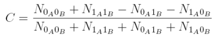
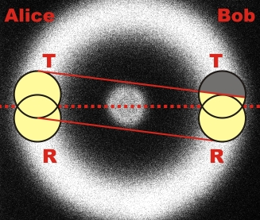

Quantum Random Chapter 3:
Random at two beam splitter cubes
In the previous chapters, the quantum random generator at the beam splitter cube was reviewed and the quantum random number generated were analyzed with statistical test methods. In this chapter, the experimental setup with one beam splitter cube on Alice's side is extended by a second beam splitter cube on Bob's side. With the symmetrical setup, quantum random can be used to qualitatively introduce the phenomenon of entanglement.
Expansion to two beam splitter cubes
The random experiment with one beam splitter (pic. 1 left) is supplemented with another beam splitter cube (pic. 1 right). The left beam splitter unit is called Alice, the right beam splitter unit is called Bob.
pic. 1 Expansion of the experiment to two beam splitter cubes
The photon at Alice's beam splitter cube is announced by the photon at Bob's beam splitter cube and vice versa. In the following interactive experiment, both Alice's and Bob's sides can be viewed independently of each other. Is there a correlation between the random process on Alice's and Bob's side? In the experiment, the crystal for the photon pairs (white holder) can be exchanged for a crystal for entangled photon pairs (black holder). Is there a correlation between the random process between Alice and Bob where entangled photons are concerned?
Explanation:
There is no apparent correlation between the random processes of Alice and Bob respectively for non-entangled (separable) photon pairs. With entangled photons, the random processes for Alice and Bob are exactly identical every time. How does this identical random decision happen with entangled photons? Can it be explained with our daily experience? How do entangled photons come into being? These and more questions are dealt with in detail in the chapter entanglement.
Description of the experiment with correlation
The difference between entangled and separable photons can be described quantitatively with the correlation between Alice and Bob. The correlation function C is:

The correlation function C counts the number N of coincidences e. g. between Alice transmitted (0A) and Bob transmitted (0B). With separable photons, the coincidences of all four possibilities are identical. The correlation function with not-entangled photons is C=0. With entangled photons, the photons always act in the same way. Either both photons are transmitted (0A0B) or reflected (1A1B). It never happens that one photon is reflected while the other photon is transmitted (0A1B, 1A0B). The correlation function for entangled photons is C=1.
In the experiment with separable photons, the correlation function could be varied between C=-0,1 and C=0,1 by changing the detector height. This effect does not have anything to do with a part-entanglement, but can be explained purely geometrically. The photon pairs are always transmitted exactly diagonally towards each other on the fluorescence cone. If both detectors, with Alice and Bob respectively, do not "look" towards exactly the same spot (pic. 2), there is a geometrically-caused correlation. In the example of picture 2, the probability for a detection of Alice transmitted and Bob reflected is far higher than the probability for a detection of both Alice and Bob transmitted. The correlation function in this example would therefore be negative. The exact values of the correlation function against the position of the four detectors can be accessed via a programme [Download].

pic. 2: Correlation by not-overlapping "detector sight" onto the fluorescent cone
In the experiment, after adjusting the detector height on Alice's and Bob's side 100MBit quantum random numbers with separable photons were recorded. Both sides have passed the NIST test independently from each other. The correlation function was C=-0,0005. As well as that, the binary addition of random numbers of Alice and Bob modulo 2 passed the NIST test. Alice's and Bob's random numbers can therefore be considered independent of each other.
With entangled photons, the correlation function was C=0,97. The spatially divided quantum process is therefore highly correlated. Alice's and Bob's random numbers are virtually identical. Correlated random is the basis of quantum cryptography with entangled photons. [Eke91].
Original data from the experiment: Random data with both crystals
Programme on the correlation function: Download
Back to overview [klick]
Author: P. Bronner, A. Strunz, June 2009
Translation: G. Murphy, June 2009